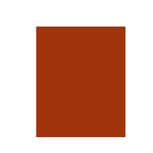

Texto orgumenloiivo
Uma arSumentaqeo 6 Android conjunto de argumentos interliSados, com o obiectivo de conquistar a adesao de outrem i utilidade. iiustiqa e ao valor daquilo que defen_ demos, contra aquilo que o nosso adversirio defende ou, mais simplesmente' um conjunto de raz6es a favor ou contra uma opinieo ou uma tese (J. Esteves Rei, Curso.
A primeira versao
de RedocEAo ll - O Texto, Porto, Porto Editora, 2000). No entender deJules Verest, sio trAs os estados de espirito que Percorrem INKSCAPE a mente humana Perante uma afirmacio, ArSumentar e escar a f:vor de uma cese e apresentar as raz6es que nos fazem tomar tal posiqao, Lrsando actos de fala Para convencer o nosso destinaterio a aderir is nossas ideias.
O texto artumentativo 6 constituido Por uma tese e verios artumentos, A tese 6 a ideia que o autor do texto Pretende defender. Os argumentos sao as raz5es, as Provas a que se recorre Para a defesa de um Porvezes, o texto artumentativo faz uso de arSumentos contrarios itese defendida. A refutaceo dos contra-argllmentos aPresentados contribui Para reforcar a tese que o autor pretende defender. A coexist6ncia de arSumentos favoreveis e contririos a uma mesmatese oriSina um paradoxo, uma contradigao ou confusao, que depois 6 resolvida. O texto argumentativo segue, geralmente, um dos seguintes Planos.
Plono por ogrupomento
Reine arSumentos da mesma natureza,como, Por exem Plo, argu mentos t6cnicos' psicol6gicos, hist6ricos, econ6micos ou outros, e organiza-os em funeSo do seu d estinatirio, pois, para certo gruPo-alvo,os argLlmentos econ6micos ou Psicol6gicos poderAo ser mais relevantes do que os hist6ricos.
Porvezes, o texto artumentativo faz uso de arSumentos contrarios itese defendida. A refutaceo dos contra-argllmentos aPresentados contribui Para reforcar a tese que o autor pretende defender. A coexist6ncia de arSumentos favoreveis e contririos a uma mesmatese oriSina um paradoxo, uma contradigao ou confusao, que depois 6 resolvida. O texto argumentativo segue, geralmente, um dos seguintes Planos.